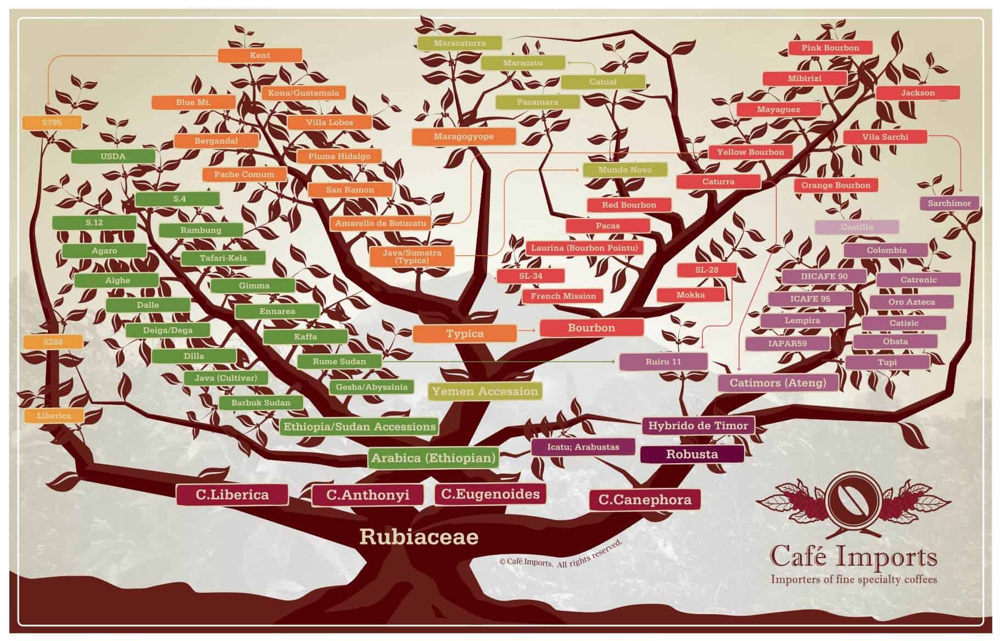

Chúng ta thường xuyên uống cà phê, nhưng không phải ai cũng biết rõ nguồn gốc của cà phê. Cùng HUFLIT Coffee đi tìm câu trả lời cho câu hỏi cà phê có nguồn gốc từ đâu nhé!

Quả cà phê
Xuất xứ của cà phê
Theo một truyền thuyết đã được ghi lại trên giấy vào năm 1671, những người chăn dê ở Kaffa (thuộc Ethiopia ngày nay) phát hiện ra một số con dê trong đàn sau khi ăn một cành cây có hoa trắng và quả màu đỏ đã chạy nhảy không mệt mỏi cho đến tận đêm khuya. Họ bèn đem chuyện này kể với các thầy tu tại một tu viện gần đó. Khi một người chăn dê trong số đó ăn thử loại quả màu đỏ đó anh ta đã xác nhận công hiệu của nó. Sau đó các thầy tu đã đi xem xét lại khu vực ăn cỏ của bầy dê và phát hiện ra một loại cây có lá xanh thẫm và quả giống như quả anh đào. Họ uống nước ép ra từ loại quả đó và tỉnh táo cầu nguyện chuyện trò cho đến tận đêm khuya. Như vậy có thể coi rằng nhờ chính đàn dê này con người đã biết được cây cà phê.
Một quán cà phê cổ ở Palestine Một quán cà phê cổ ở Palestine Người ta tin rằng tỉnh Kaffa của Ethiopia chính là vùng đất khởi nguyên của cây cà phê. Từ thế kỉ thứ 9 người ta đã nói đến loại cây này ở đây. Vào thế kỉ thứ 14 những người buôn nô lệ đã mang cà phê từ Ethiopia sang vùng Ả Rập. Nhưng tới tận giữa thế kỉ thứ 15 người ta mới biết rang hạt cà phê lên và sử dụng nó làm đồ uống. Vùng Ả Rập chính là nơi trồng cà phê độc quyền. Trung tâm giao dịch cà phê là thành phố cảng Mocha, hay còn được gọi là Mokka, tức là thành phố Al Mukha thuộc Yemen ngày nay.
Cách thức pha chế cà phê truyền thống của người Ethiopia có lẽ là cách thức cổ xưa nhất. Hạt cà phê được cho vào một cái chảo sắt to và rang lên, sau đó được nghiền vụn ra hoặc cho vào cối giã. Chỗ hạt giã vụn đó được trộn với đường trong một cái bình gọi là jebena (một loại bình cổ thon có quai), nấu lên và đổ ra bát.
Nguồn gốc của cà phê
Cà phê (gốc từ café trong tiếng Pháp) là một loại thức uống màu đen có chứa chất caffein và được sử dụng rộng rãi. Được sản xuất từ những hạt cà phê được rang lên, từ cây cà phê.
Cà phê được sử dụng lần đầu tiên vào thế kỉ thứ 9, khi nó được khám phá ra từ vùng cao nguyên Ethiopia. Từ đó, nó lan ra Ai Cập và Yemen, và tới thế kỉ thứ 15 thì đến Armenia, Persia, Thổ Nhĩ Kỳ và phía bắc Châu Phi. Từ thế giới Hồi giáo, cà phê đến Ý, sau đó là phần còn lại của Châu Âu, Indonesia và Mĩ. Ngày nay, cà phê là một trong những thức uống thông dụng toàn cầu.

Sơ đồ tư duy các loại cà phê
Hiện nay, cây cà phê được trồng tại hơn 50 quốc gia trên thế giới
Trong đó có một số nước xuất khẩu cà phê. Hạt cà phê được lấy từ hạt của các loài cây thuộc họ cà phê (Rubiaceae).
Ba dòng cây cà phê chính là Coffea Arabica (Cà phê Arabica) – Cà phê chè – và Coffea canephora (Cà phê Robusta) – cà phê vối cà phê mít – Coffea excelsa – với nhiều loại khác nhau. Chất lượng hay đẳng cấp của cà phê khác nhau tùy theo từng loại cây, từng loại hạt và nơi trồng khác nhau. Cà phê Abrica được đánh giá cao hơn so với cà phê Robusta.
Loại cà phê đắt nhất và hiếm nhất thế giới tên là Kopi Luwak (hay “cà phê chồn”) của Indonesia và Việt Nam. Đây không phải là một giống cà phê mà một cách chế biến cà phê bằng cách dùng bộ tiêu hóa của loài cầy. Giá mỗi cân cà phê loại này khoảng 20 triệu VND (1300 USD) và hàng năm chỉ có trên 200 kg được bán trên thị trường thế giới.
Vai trò và tác dụng của cà phê
Tác dụng chính của cà phê không phải là giải khát, mặc dù người dân Mỹ uống nó như thức uống giải khát. Nhiều người uống nó với mục đích tạo cảm giác hưng phấn. Theo một nghiên cứu được công bố vào tháng 8 năm 2005 của nhà hoá học Mỹ Joe Vinson thuộc Đại học Scranton thì cà phê là một nguồn quan trọng cung cấp các chất chống ôxi hóa (antioxidant) cho cơ thể – vai trò mà trước đây người ta chỉ thấy ở hoa quả và rau xanh. Những chất này cũng gián tiếp làm giảm nguy cơ bị ung thư ở người.
Cà phê đóng một vai trò quan trọng trong xã hội xuyên suốt lịch sử hiện đại. Ở Châu Phi và Yemen, nó được dùng trong các nghi lễ tôn giáo. Kết quả là các nhà thờ ở Ethiopia cấm sử dụng cà phê cho đến triều đại Menelik II của Ethiopia. Nó cũng bị cấm ở Ottoman Thổ Nhĩ Kỳ trong thế kỉ 17 vì lý do chính trị.


 Nguồn gốc và sự phát triển của cà phê
Nguồn gốc và sự phát triển của cà phê